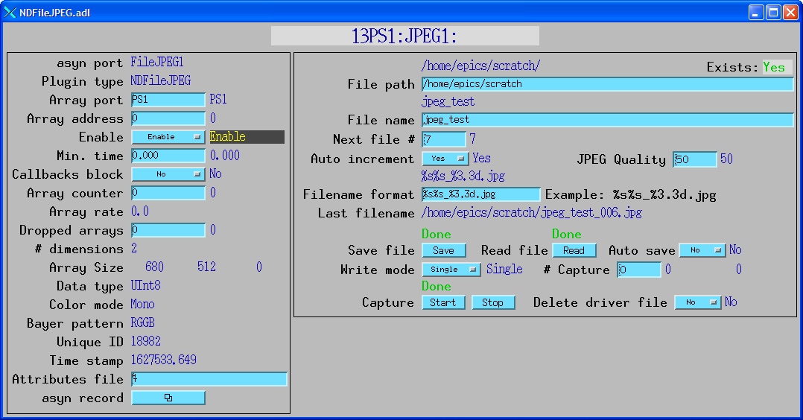
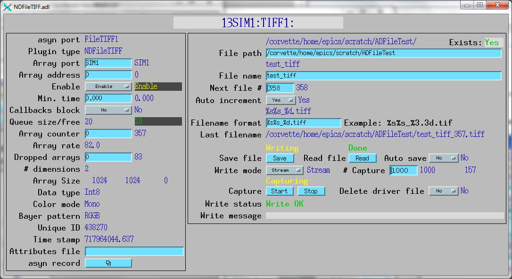
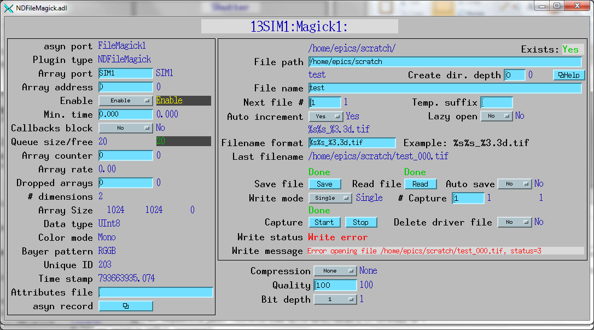
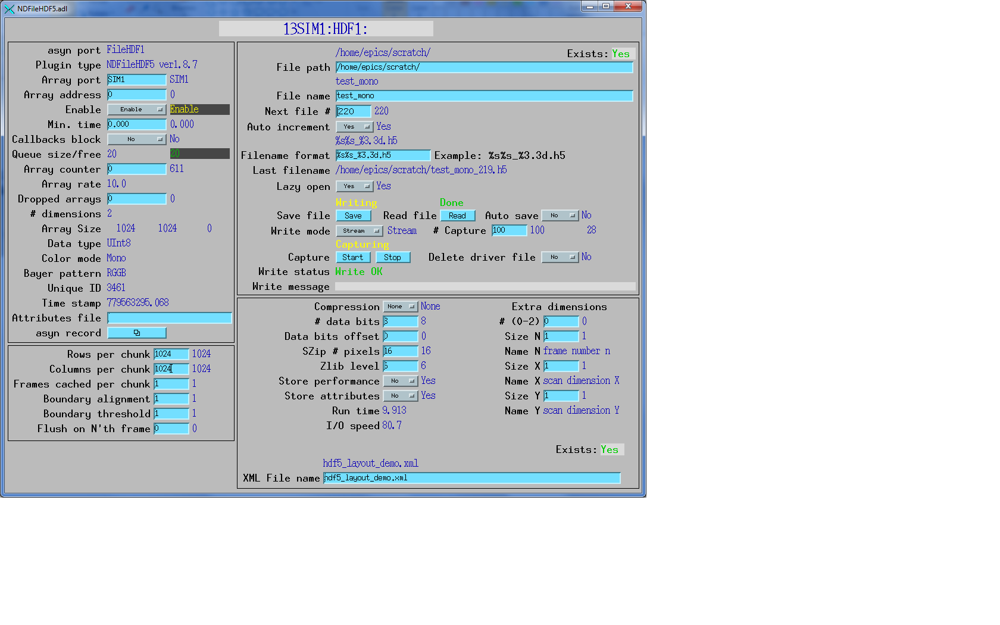

NDFileNetCDF.adl

NDPluginFile is a base class from which actual file plugins are derived. There are currently file plugins for JPEG, TIFF, netCDF, Nexus, and HD5 file formats. The GraphicsMagick plugin can write a large number of formats, including JPEG, TIFF, PNG, PDF and many others.
NDPluginFile inherits from NDPluginDriver. The NDPluginFile class documentation describes this class in detail. This class is designed to simplify the task of supporting a new file format. A derived class to support a new file format will typically need to implement only the pure virtual functions openFile(), readFile(), writeFile(), and closeFile(). Note that none of the current file plugins actually support the readFile() function yet, but this is planned for future releases.
The NDArray callback data can be written to disk in 1 of 3 modes:
At least one array with the same datatype, array size, and attributes must have been collected by the driver (and/or plugins) from which the file saving plugin is getting its data before capture or stream mode file saving is started. This is required so that the openFile() function can know the dimensions and datatype of the arrays.
NDPluginFile supports all of the file saving parameters defined in asynNDArrayDriver, e.g. NDFilePath, NDFileName, etc. Thus, the same interface that is used for saving files directly in a driver is used for this plugin.
The base class will delete the "original" file that the driver created for that array if the following are all true:
The file saving plugins normally determine the name of the file from the FileName and FileNumber records. However, it is possible to have these values come instead from attributes in the array passed to the callback. The following 3 special attributes are used:
Having the file information come from the array allows the driver to control which plugin saves a particular array. For example, there may be two file writing plugins active; the first saves the flat field files for a tomography experiment, and the second saves the normal projections. These plugins each stream data to a separate file. The driver knows which files are flat fields and which are normal projections, and adds the appropriate attributes to control which plugin saves each array. This would not be possible using a single plugin and EPICS PVs to switch the file, because of the problem of frames being buffered in the plugin queue.
NDFileJPEG inherits from NDPluginFile. This plugin saves data in the JPEG file format, which is a compressed file format for storing images. There is JPEG support for almost all languages and programs such as IDL and Matlab.
The JPEG plugin is limited to 8-bit arrays. It supports all color modes (Mono, RGB1, RGB2, and RGB3). It is limited to a single array per file, but capture and stream mode are supported by writing multiple JPEG files.
The JPEG plugin supports the Int32 parameter NDFileJPEGQuality to control the amount of compression in the file. This parameter varies from 0 (maximum compression, lowest quality) to 100 (least compression, best quality). NDFileJPEG.template defines 2 records to support this: $(P)$(R)JPEGQuality (longout) and $(P)$(R)JPEGQuality_RBV (longin).
The NDFileJPEG class documentation describes this class in detail.
The NDFileJPEG plugin is created with the NDFileJPEGConfigure command, either from C/C++ or from the EPICS IOC shell.
NDFileJPEGConfigure (const char *portName, int queueSize, int blockingCallbacks,
const char *NDArrayPort, int NDArrayAddr, size_t maxMemory,
int priority, int stackSize)
For details on the meaning of the parameters to this function refer to the detailed documentation on the NDFileJPEGConfigure function in the NDFileJPEG.cpp documentation and in the documentation for the constructor for the NDFileJPEG class.

NDFileTIFF inherits from NDPluginFile. This plugin saves data in the TIFF file format, which is a popular file format for storing images. There is TIFF support for almost all languages and programs such as IDL and Matlab.
The TIFF plugin is limited to 8, 16 and 32-bit integer arrays. It supports all color modes (Mono, RGB1, RGB2, and RGB3). Note that some TIFF readers do not support 16 or 32 bit TIFF files, and many do not support 16 or 32 bit color files. NDFileTIFF is limited to a single array per file, but capture and stream mode are supported by writing multiple TIFF files.
The NDFileNetTIFF class documentation describes this class in detail.
The NDFileTIFF plugin is created with the NDFileTIFFConfigure command, either from C/C++ or from the EPICS IOC shell.
NDFileTIFFConfigure (const char *portName, int queueSize, int blockingCallbacks,
const char *NDArrayPort, int NDArrayAddr, size_t maxMemory,
int priority, int stackSize)
For details on the meaning of the parameters to this function refer to the detailed documentation on the NDFileTIFFConfigure function in the NDFileTIFF.cpp documentation and in the documentation for the constructor for the NDFileTIFF class.

NDFileMagick inherits from NDPluginFile. This plugin saves data in any of the formats supported by the GraphicsMagick package. GraphicsMagick supports dozens of file formats, including TIFF, JPEG, PNG, PDF, and many others. GraphicsMagick automatically selects the output file format based on the extension of the file (.jpg=JPEG, .tif=TIFF, etc. The GraphicsMagick plugin should be able to write files in any format in the list of GraphicsMagick supported file formats" that has a "W" or "RW" in the Mode column.
The GraphicsMagick plugin is limited to 8 and 16-bit integer arrays. It supports color modes Mono and RGB1. NDFileMagick is limited to a single array per file, but capture and stream mode are supported by writing multiple files.
The GraphicsMagick plugin supports the Int32 parameter NDFileMagickCompressType to control the compression mode of the file. NDFileMagick.template defines 2 records to support this: $(P)$(R)CompressType (longout) and $(P)$(R)CompressType_RBV (longin). The following are the supported compression types:
No formats support all of these compression types. Many support only one, or have an implicit compression mode and so ignore the CompressType parameter. For example, the JPEG and PNG formats support only their respective implicit compression modes. I have determined empirically that the TIFF format supports "None", "JPEG", "LZW", and "ZIP", while the PDF format supports "None", "BZip", "FAX", and "JPEG".
The NDFileMagick class documentation describes this class in detail.
The NDFileMagick plugin is created with the NDFileMagickConfigure command, either from C/C++ or from the EPICS IOC shell.
NDFileMagickConfigure(const char *portName, int queueSize, int blockingCallbacks,
const char *NDArrayPort, int NDArrayAddr, size_t maxMemory,
int priority, int stackSize)
For details on the meaning of the parameters to this function refer to the detailed documentation on the NDFileMagickConfigure function in the NDFileMagick.cpp documentation and in the documentation for the constructor for the NDFileMagick class.

NDFileNetCDF inherits from NDPluginFile. This plugin saves data in the netCDF file format, which is a portable self-describing binary file format supported by UniData at UCAR (University Corporation for Atmospheric Research). There are netCDF libraries for C, C++, Fortran, and Java. Other languages, including Matlab and IDL have built-in support for netCDF. There are also add-on interfaces available for Python, Ruby and other languages.
The netCDF plugin supports all NDArray data types and any number of array dimensions. It also has full support for NDArray attributes. It will write all attributes associated with the NDArray to the file. If multiple arrays are written to a single netCDF file (stream or capture mode) then each attribute will be an array, with the attribute value for each NDArray in the file being stored. Note that the number and data types of attributes must not be changed while file capture or file streaming are in progress because that would change the structure of the attribute array. Also the colorMode attribute must not be changed while capture or streaming is in progress, because that would change the structure of the NDArray data.
The NDFileNetCDF class documentation describes this class in detail.
The NDFileNetCDF plugin is created with the NDFileNetCDFConfigure command, either from C/C++ or from the EPICS IOC shell.
NDFileNetCDFConfigure (const char *portName, int queueSize, int blockingCallbacks,
const char *NDArrayPort, int NDArrayAddr, size_t maxMemory,
int priority, int stackSize)
For details on the meaning of the parameters to this function refer to the detailed documentation on the NDFileNetCDFConfigure function in the NDFileNetCDF.cpp documentation and in the documentation for the constructor for the NDFileNetCDF class.
The following is the header contents of a netCDF file produced by this plugin. This information was produced with the following command:
ncdump -h test_netCDF_68.nc
netcdf test_netCDF_68 {
dimensions:
numArrays = UNLIMITED ; // (10 currently)
dim0 = 240 ;
dim1 = 320 ;
dim2 = 1 ;
attrStringSize = 256 ;
variables:
int uniqueId(numArrays) ;
double timeStamp(numArrays) ;
float array_data(numArrays, dim0, dim1, dim2) ;
int Attr_colorMode(numArrays) ;
double Attr_AcquireTime(numArrays) ;
double Attr_RingCurrent(numArrays) ;
int Attr_ImageCounter(numArrays) ;
char Attr_CameraModel(numArrays, attrStringSize) ;
int Attr_BinX(numArrays) ;
int Attr_BinY(numArrays) ;
double Attr_AttrTimeStamp(numArrays) ;
double Attr_ROI0Mean(numArrays) ;
double Attr_ROI1Mean(numArrays) ;
char Attr_FilePath(numArrays, attrStringSize) ;
char Attr_FileName(numArrays, attrStringSize) ;
// global attributes:
:dataType = 6 ;
:NDNetCDFFileVersion = 3. ;
:numArrayDims = 3 ;
:dimSize = 1, 320, 240 ;
:dimOffset = 0, 0, 0 ;
:dimBinning = 1, 2, 2 ;
:dimReverse = 0, 0, 0 ;
:Attr_colorMode_DataType = "Int32" ;
:Attr_colorMode_Description = "Color mode" ;
:Attr_colorMode_Source = ;
:Attr_colorMode_SourceType = "Driver" ;
:Attr_AcquireTime_DataType = "Float64" ;
:Attr_AcquireTime_Description = "Camera acquire time" ;
:Attr_AcquireTime_Source = "13SIM1:cam1:AcquireTime" ;
:Attr_AcquireTime_SourceType = "EPICS_PV" ;
:Attr_RingCurrent_DataType = "Float64" ;
:Attr_RingCurrent_Description = "Storage ring current" ;
:Attr_RingCurrent_Source = "S:SRcurrentAI" ;
:Attr_RingCurrent_SourceType = "EPICS_PV" ;
:Attr_ImageCounter_DataType = "Int32" ;
:Attr_ImageCounter_Description = "Image counter" ;
:Attr_ImageCounter_Source = "ARRAY_COUNTER" ;
:Attr_ImageCounter_SourceType = "Param" ;
:Attr_CameraModel_DataType = "String" ;
:Attr_CameraModel_Description = "Camera model" ;
:Attr_CameraModel_Source = "MODEL" ;
:Attr_CameraModel_SourceType = "Param" ;
:Attr_BinX_DataType = "Int32" ;
:Attr_BinX_Description = "X binning" ;
:Attr_BinX_Source = "13SIM1:ROI1:0:BinX_RBV" ;
:Attr_BinX_SourceType = "EPICS_PV" ;
:Attr_BinY_DataType = "Int32" ;
:Attr_BinY_Description = "Y binning" ;
:Attr_BinY_Source = "13SIM1:ROI1:0:BinY_RBV" ;
:Attr_BinY_SourceType = "EPICS_PV" ;
:Attr_AttrTimeStamp_DataType = "Float64" ;
:Attr_AttrTimeStamp_Description = "Time stamp" ;
:Attr_AttrTimeStamp_Source = "TIME_STAMP" ;
:Attr_AttrTimeStamp_SourceType = "Param" ;
:Attr_ROI0Mean_DataType = "Float64" ;
:Attr_ROI0Mean_Description = "Mean value ROI 0" ;
:Attr_ROI0Mean_Source = "MEAN_VALUE" ;
:Attr_ROI0Mean_SourceType = "Param" ;
:Attr_ROI1Mean_DataType = "Float64" ;
:Attr_ROI1Mean_Description = "Mean value ROI 0" ;
:Attr_ROI1Mean_Source = "MEAN_VALUE" ;
:Attr_ROI1Mean_SourceType = "Param" ;
:Attr_FilePath_DataType = "String" ;
:Attr_FilePath_Description = "File path" ;
:Attr_FilePath_Source = "13SIM1:netCDF1:FilePath_RBV" ;
:Attr_FilePath_SourceType = "EPICS_PV" ;
:Attr_FileName_DataType = "String" ;
:Attr_FileName_Description = "File name" ;
:Attr_FileName_Source = "13SIM1:netCDF1:FileName_RBV" ;
:Attr_FileName_SourceType = "EPICS_PV" ;
}
ncdump is one of a number of very useful command line utilities that come with the netCDF package. The -h option to ncdump means to dump only the header information, not the variable data. This is an explanation of this output:
There is an IDL function, read_nd_netcdf that can be used to read the netCDF files created by this plugin. This routine is contained in the CARS IDL detector package. This function is also contained in the areaDetector distribution in the Viewers/IDL directory.
There is a plugin for the popular ImageJ program that can be used to read the netCDF files created by this plugin. This ImageJ plugin can be downloaded here. This plugin is also contained in the areaDetector distribution in the Viewers/ImageJ/EPICS_areaDetector directory.
A plugin to write NeXus files was written by John Hammonds from the APS. NeXus is a standard format for x-ray and neutron data based on HDF. This is a very general file format, capable of storing any type of array data and meta-data.
The NDFileNexus class documentation describes this class in detail.
The NDFileNexus plugin is created with the NDFileNexusConfigure command, either from C/C++ or from the EPICS IOC shell.
NDFileNexusConfigure (const char *portName, int queueSize, int blockingCallbacks,
const char *NDArrayPort, int NDArrayAddr, size_t maxMemory,
int priority, int stackSize)
For details on the meaning of the parameters to this function refer to the detailed documentation on the NDFileNexusConfigure function in the NDFileNexus.cpp documentation and in the documentation for the constructor for the NDFileNexus class.
NDFileNeXus uses 2 additional parameters to define the location of an XML file that is read to determine the contents of the NeXus files written by this plugin. These are described in the following table.
| Parameter Definitions in NDFileNexus.h and EPICS Record Definitions in NDFileNexus.template | ||||||
| Parameter index variable | asyn interface | Access | Description | drvInfo string | EPICS record name | EPICS record type |
|---|---|---|---|---|---|---|
| Location of XML file to configure NeXus file contents | ||||||
| NDFileNexusTemplatePath | asynOctet | r/w | Path to XML template file | TEMPLATE_FILE_PATH |
$(P)$(R)TemplateFilePath $(P)$(R)TemplateFilePath_RBV |
waveform waveform |
| NDFileNexusTemplateFile | asynOctet | r/w | Name of XML template file | TEMPLATE_FILE_NAME |
$(P)$(R)TemplateFileName $(P)$(R)TemplateFileName_RBV |
waveform waveform |
There is currently no documentation on the contents of the XML template file. However, there are example XML template files in the iocSimDetector and iocPerkinElmer directories. Documentation on the XML file contents will be written ASAP. It is possible to validate most of the syntax in a NeXus template XML file. For example, the command (starting from the iocBoot directory) to validate the syntax of the iocBoot/iocSimDetector/NexusTemplate.xml file is:
xmllint --noout --schematron ./template.sch iocSimDetector/NexusTemplate.xml
The prebuilt Linux libraries libhdf5.a and libNeXus.a are built with HDF5 1.6.9. When they are built with the latest version, 1.8.2, they require GLIBC version 2.7 or higher, i.e. /lib/libc-2.7.so or higher. Since users may want to install areaDetector on older Linux systems (which predate Fedora Core 8 for example), it was decided to use this older version of HDF5. Future releases of areaDetector may use HDF5 1.8.2 or later, and hence not work with older Linux systems.
NDFileHDF5 inherits from NDPluginFile. This plugin uses the HDF5 libraries to store data. HDF5 file format is a self-describing binary format supported by the hdfgroup.
The plugin supports all NDArray datatypes and any number of NDArray dimensions (tested up to 3). It supports storing multiple NDArrays in a single file (in stream or capture modes) where each NDArray get appended to an extra dimension.
NDArray attributes are stored in the HDF5 file. In case of multi-frame files the attributes are stored in 1D datasets (arrays).
The NDFileHDF5 plugin is created with the NDFileHDF5Configure command, either from C/C++ or from the EPICS IOC shell.
NDFileHDF5Configure (const char *portName, int queueSize, int blockingCallbacks,
const char *NDArrayPort, int NDArrayAddr, size_t maxMemory,
int priority, int stackSize)
For details on the meaning of the parameters to this function refer to the detailed documentation on the NDFileNexusConfigure function in the NDFileHDF5.cpp documentation and in the documentation for the constructor for the NDFileHDF5 class.
The HDF5 files comprises a hierachial data structure, similar to a file system structure with directories (groups) and files (datasets) [ref]
This plugin writes HDF5 files that are compatible with the Nexus file format. This is achieved by defining a specific hierachial structure of groups and datasets and by tagging elements in the hierachi with certain "NX_class=nnn" attributes. Although Nexus libraries are not used to write the data to disk, this file structure allow Nexus-aware readers to open and read the content of these HDF5 files. This has been tested with the Nexus reader in the GDA application.
The directory structure of the HDF5 files, generated by this plugin:
entry <-- NX_class=NXentry
|
+--instrument <-- NX_class=NXinstrument
|
+--NDAttributes
| |
| +--- <-- Any number of EPICS PV based NDAttributes as individual 1D datasets
| +--- The PV attributes are in the 'instrument' group as they are expected
| to originate from the beamline/instrument rather than the detector itself
|
+--detector <-- NX_class=NXdetector
| |
| +--data <-- NX_class=SDS, signal=1
| |
| +--NDAttributes
| |
| +--- <-- Any number of PARAM type NDAttributes as individual 1D datasets
| +--- These type of parameters are in the 'detector' group as they
| originate from the areaDetector system
|
+--performance <-- Performance of the file writing
|
+--timestamp <-- A 2D dataset of different timing measurements taking during file writing
HDFView is a simple GUI tool for viewing and browsing HDF files. It has some limited support for viewing images, plotting graphs and displaying data tables.
The HDF5 libraries also ships with a number of command-line tools for browsing and dumping data.
The screenshot below shows the hdfview application with a datafile open. The datafile is generated by the plugin and a number of elements are visible:
Both areaDetector and the HDF5 file format supports multidimensional datasets. The dimensions from the NDArray are preserved when writing to the HDF5 file. In multi-frame files (plugin in Stream or Capture mode) an additional dimension is added to the dataset to hold the array of frames.
In addition to the dimensions of the NDArray it is also possible to specify up to 2 extra "virtual" dimensions to store datasets in the file. This is to support applications where a sample is scanned in up to two dimensions, say X and Y. For each scan point a dataset comprising of multiple frames can be stored. The length of (i.e. number of points in) each of the two virtual dimensions have to be specified before the plugin opens the file for writing. This feature is only supported in the Stream and Capture modes.
This feature allow for creating very large sets of scan data which matches the dimensions of the performed scan in one datafile. Depending on the application this can be a benefit in post processing.
The figure below illustrate the use of the two extra "virtual" dimensions in a 2D (X,Y) raster scan with N frames per point:

Prior to starting a scan like this the user will need to configure the number of virtual dimensions to use (none, 1 or 2); the number of frames per point; and the length of each of the virtual dimensions (4 x 2 in the example figure). It is not possible to change the number or size of dimensions while the file is open.
For 2D image (greyscale) formats the dimensions in the multiframe HDF5 file are organised as follows:
The attributes from NDArrays are stored in the HDF5 files. The list of attributes is loaded when a file is opened so XML attributes files should not be reloaded during an acquisition run.
The type of attribute is used to determine where in the file structure the attribute data will end up. All attribute datasets will be named by the NDArray attribute name. They will also have metadata (known as HDF "attributes") to indicate their source type and origin.
It is possible to validate the syntax of an NDArray attributes XML file. For example, the command (starting from the iocBoot directory) to validate the syntax of the iocBoot/iocSimDetector/simDetectorAttributes.xml file is:
xmllint --noout --schema ./attributes.xsd iocSimDetector/simDetectorAttributes.xml
The HDF5 library supports a number of compression algorithms. When using HDF5 libraries to write and read files the compression is seemless: it only need to be switched on when writing and HDF5 enabled applications can read the files without any additional configuration. Only one compression filter can be applied at the time.
The following compression filters are supported in the NDFileHDF5 plugin:
| Parameter Definitions and EPICS Record Definitions in NDFileHDF5.template | ||||||
| Parameter index variable | asyn interface | Access | Description | drvInfo string | EPICS record name | EPICS record type |
|---|---|---|---|---|---|---|
| nRowChunks | asynInt32 | r/w | Configure HDF5 "chunking" to approriate size for the filesystem: sets number of rows to use per chunk | HDF5_nRowChunks |
$(P)$(R)NumRowChunks $(P)$(R)NumRowChunks_RBV |
longout longin |
| storeAttributes | asynInt32 | r/w | Enable or disable support for storing NDArray attributes in file | HDF5_storeAttributes |
$(P)$(R)StoreAttr $(P)$(R)StoreAttr_RBV |
bo bi |
| storePerformance | asynInt32 | r/w | Enable or disable support for storing file IO timing measurements in file | HDF5_storePerformance |
$(P)$(R)StorePerform $(P)$(R)StorePerform_RBV |
bo bi |
| Additional Virtual Dimensions | ||||||
| nExtraDims | asynInt32 | r/w | Number of extra dimensions [0..2] | HDF5_nExtraDims |
$(P)$(R)NumExtraDims $(P)$(R)NumExtraDims |
mbbo mbbi |
| extraDimSizeN | asynInt32 | r/w | Size of extra dimension N (no. of frames per point) | HDF5_extraDimSizeN |
$(P)$(R)ExtraDimSizeN $(P)$(R)ExtraDimSizeN_RBV |
|
| extraDimSizeX | asynInt32 | r/w | Size of extra dimension X | HDF5_extraDimSizeX |
$(P)$(R)ExtraDimSizeX $(P)$(R)ExtraDimSizeX_RBV |
longout longin |
| extraDimSizeY | asynInt32 | r/w | Size of extra dimension Y | HDF5_extraDimSizeY |
$(P)$(R)ExtraDimSizeY $(P)$(R)ExtraDimSizeY_RBV |
longout longin |
| Runtime Statistics | ||||||
| totalRuntime | asynFloat64 | r/o | Total runtime in seconds from first frame to file closed | HDF5_totalRuntime | $(P)$(R)Runtime | ai |
| totalIoSpeed | asynFloat64 | r/o | Overall IO write speed in megabit per second from first frame to file closed | HDF5_totalIoSpeed | $(P)$(R)IOSpeed | ai |
| Compression Filters | ||||||
| compressionType | asynInt32 | r/w | Select or switch off compression filter | HDF5_compressionType |
$(P)$(R)Compression $(P)$(R)Compression_RBV |
mbbo mbbi |
| nbitsPrecision | asynInt32 | r/w | N-bit compression filter: number of data bits per pixel | HDF5_nbitsPrecision |
$(P)$(R)NumDataBits $(P)$(R)NumDataBits_RBV |
longout longin |
| nbitsOffset | asynInt32 | r/w | N-bit compression filter: dataword bit-offset in pixel | HDF5_nbitsOffset |
$(P)$(R)DataBitsOffset $(P)$(R)DataBitsOffset_RBV |
longout longin |
| szipNumPixels | asynInt32 | r/w | szip compression filter: number of pixels in filter [1..32] | HDF5_szipNumPixels |
$(P)$(R)SZipNumPixels $(P)$(R)SZipNumPixels_RBV |
longout longin |
| zCompressLevel | asynInt32 | r/w | zlib compression filter: compression level [1..9] | HDF5_zCompressLevel |
$(P)$(R)ZLevel $(P)$(R)ZLevel_RBV |
longout longin |
The NDFileHDF5 plugin was developed by Ulrik Kofoed Pedersen at Diamond Light Source.

NDFileNull inherits from NDPluginFile. This is a dummy file writer, which does not actually write anything. Its main purpose is to delete original driver files (DeleteDriverFile record) without writing the data to disk. For example, if the Pilatus is being used simply for alignment or testing one might want to display the images but then immediately delete the files that the Pilatus had created. This plugin allows one to do this, since it always reports success in "writing" the file, so the NDPluginFile base class will deleted the driver file if all the conditions outlined above are met.
The NDFileNull class documentation describes this class in detail.
The NDFileNull plugin is created with the NDFileNullConfigure command, either from C/C++ or from the EPICS IOC shell.
NDFileNullConfigure (const char *portName, int queueSize, int blockingCallbacks,
const char *NDArrayPort, int NDArrayAddr, size_t maxMemory,
int priority, int stackSize)